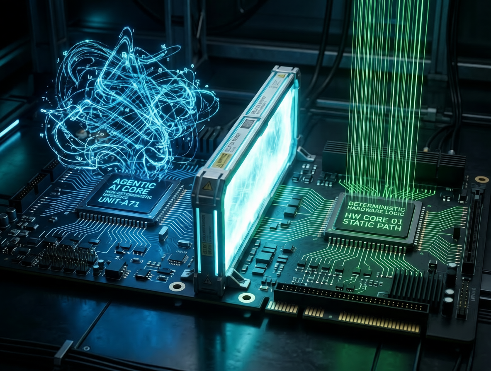
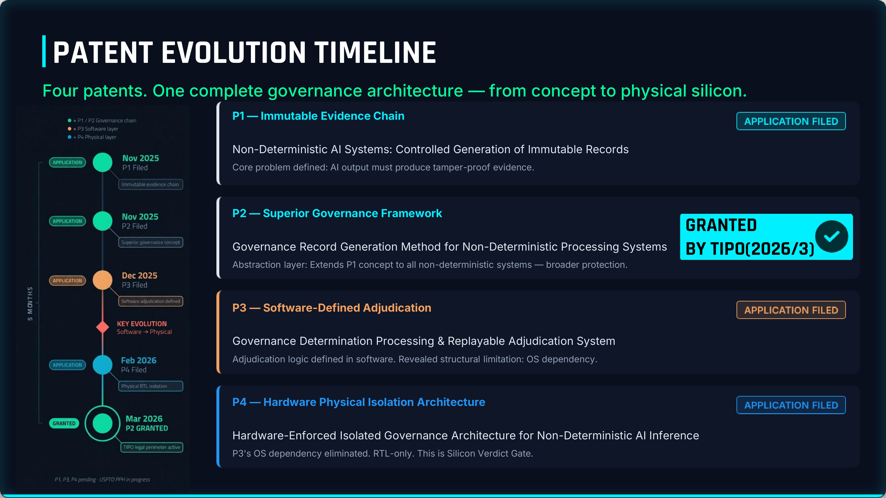
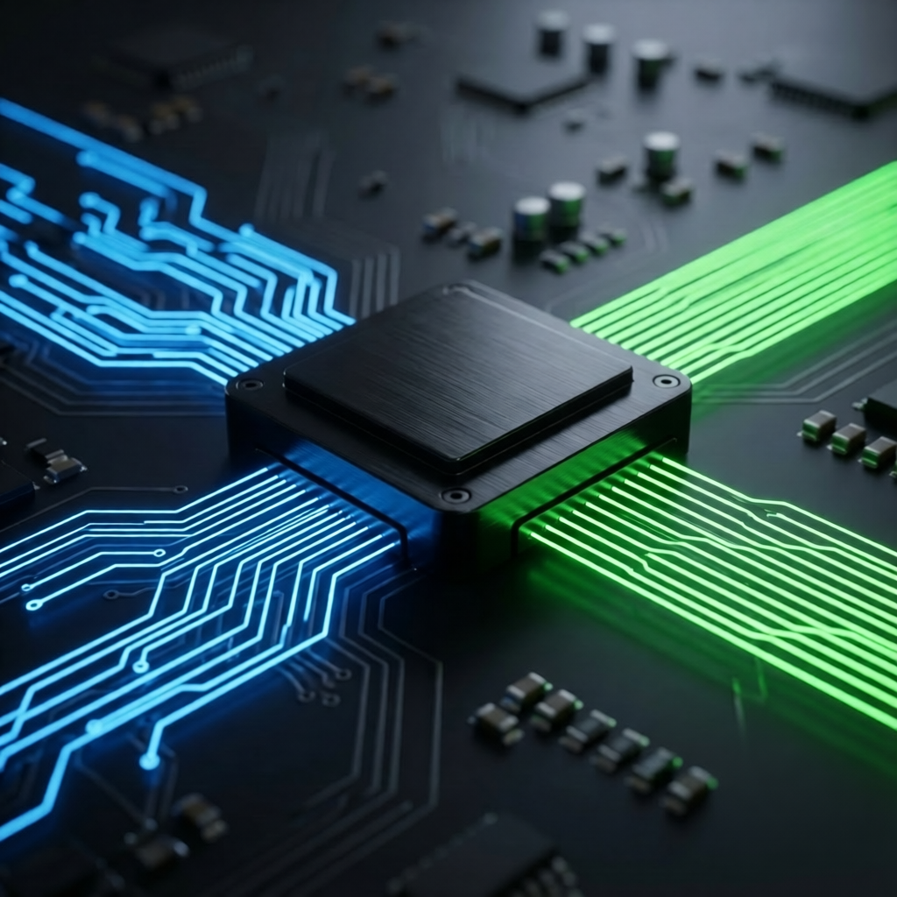

<!DOCTYPE html>
<html lang="zh-TW">
<head>
    <meta charset="UTF-8">
    <meta name="viewport" content="width=device-width, initial-scale=1.0">
    <title>可信智慧整合 | Trusted Intelligence Integration</title>
    
    <script src="https://unpkg.com/react@18/umd/react.development.js" crossorigin></script>
    <script src="https://unpkg.com/react-dom@18/umd/react-dom.development.js" crossorigin></script>
    <script src="https://unpkg.com/@babel/standalone/babel.min.js"></script>
    <script src="https://cdn.tailwindcss.com"></script>
    <link href="https://cdnjs.cloudflare.com/ajax/libs/font-awesome/6.0.0/css/all.min.css" rel="stylesheet">
    <link href="https://unpkg.com/aos@2.3.1/dist/aos.css" rel="stylesheet">
    <script src="https://unpkg.com/aos@2.3.1/dist/aos.js"></script>
    <link href="https://fonts.googleapis.com/css2?family=Inter:wght@300;400;500;600;700;900&family=Noto+Sans+TC:wght@300;400;500;700;900&display=swap" rel="stylesheet">

    <style>
        /* Global Styles */
        body { font-family: 'Inter', 'Noto Sans TC', sans-serif; overflow-x: hidden; transition: background-color 0.5s ease; }
        /* Animations */
        @keyframes float { 0% { transform: translateY(0px); } 50% { transform: translateY(-15px); } 100% { transform: translateY(0px); } }
        .floating-img { animation: float 6s ease-in-out infinite; }
        .parallax-bg { background-attachment: fixed; background-position: center; background-repeat: no-repeat; background-size: cover; }
        /* Glass Effects */
        .glass-card { background: rgba(30, 41, 59, 0.4); backdrop-filter: blur(12px); border: 1px solid rgba(255, 255, 255, 0.05); }
        .glass-nav { background: rgba(11, 17, 32, 0.9); backdrop-filter: blur(12px); }
        /* Text Gradients */
        .tech-gradient-text { background: linear-gradient(to right, #60a5fa, #34d399); -webkit-background-clip: text; -webkit-text-fill-color: transparent; }
        .accent-gradient { background: linear-gradient(135deg, #2563eb, #10b981); }
        /* Page Transition */
        .page-enter { animation: fadeIn 0.6s ease-out; }
        @keyframes fadeIn { from { opacity: 0; transform: translateY(15px); } to { opacity: 1; transform: translateY(0); } }
        /* Image Preview Styles */
        .preview-container {
            cursor: zoom-in;
            transition: transform 0.3s ease, box-shadow 0.3s ease;
        }
        .preview-container:hover {
            transform: translateY(-5px);
            box-shadow: 0 20px 40px -10px rgba(56, 189, 248, 0.2);
        }
        #imageModal {
            backdrop-filter: blur(8px);
            transition: all 0.3s ease;
        }
    </style>
</head>
<body class="antialiased selection:bg-blue-500/30">
    <div id="root"></div>

    <script type="text/babel">
        const { useState, useEffect } = React;

        const Icon = ({ path, size = 24, className = "" }) => (
            <svg xmlns="http://www.w3.org/2000/svg" width={size} height={size} viewBox="0 0 24 24" fill="none" stroke="currentColor" strokeWidth="1.5" strokeLinecap="round" strokeLinejoin="round" className={className}>
                {path}
            </svg>
        );

        const Icons = {
            ShieldCheck: <path d="M12 22s8-4 8-10V5l-8-3-8 3v7c0 6 8 10 8 10z m-3 10 2 2 4-4" />,
            ArrowRight: <g><line x1="5" y1="12" x2="19" y2="12" /><polyline points="12 5 19 12 12 19" /></g>,
            Cpu: <g><rect x="4" y="4" width="16" height="16" rx="2" ry="2" /><rect x="9" y="9" width="6" height="6" /><line x1="9" y1="1" x2="9" y2="4" /><line x1="15" y1="1" x2="15" y2="4" /><line x1="9" y1="20" x2="9" y2="23" /><line x1="15" y1="20" x2="15" y2="23" /><line x1="20" y1="9" x2="23" y2="9" /><line x1="20" y1="14" x2="23" y2="14" /><line x1="1" y1="9" x2="4" y2="9" /><line x1="1" y1="14" x2="4" y2="14" /></g>,
            Lock: <g><rect x="3" y="11" width="18" height="11" rx="2" ry="2" /><path d="M7 11V7a5 5 0 0 1 10 0v4" /></g>,
            Zap: <polygon points="13 2 3 14 12 14 11 22 21 10 12 10 13 2" />,
            Server: <g><rect x="2" y="2" width="20" height="8" rx="2" ry="2" /><rect x="2" y="14" width="20" height="8" rx="2" ry="2" /><line x1="6" y1="6" x2="6.01" y2="6" /><line x1="6" y1="18" x2="6.01" y2="18" /></g>,
            Car: <g><path d="M19 17h2c.6 0 1-.4 1-1v-3c0-.9-.7-1.7-1.5-1.9C18.7 10.6 16 10 16 10s-1.3-1.4-2.2-2.3c-.5-.4-1.1-.7-1.8-.7H5c-.6 0-1.1.4-1.4.9L2 12v4c0 .6.4 1 1 1h2"/><circle cx="7" cy="17" r="2"/><path d="M9 17h6"/><circle cx="17" cy="17" r="2"/></g>,
            Target: <g><circle cx="12" cy="12" r="10"/><circle cx="12" cy="12" r="6"/><circle cx="12" cy="12" r="2"/></g>,
            Activity: <polyline points="22 12 18 12 15 21 9 3 6 12 2 12" />,
            BookOpen: <g><path d="M2 3h6a4 4 0 0 1 4 4v14a3 3 0 0 0-3-3H2z"/><path d="M22 3h-6a4 4 0 0 0-4 4v14a3 3 0 0 1 3-3h7z"/></g>
        };

        const WIcon = ({ name, className, size }) => <Icon path={Icons[name]} className={className} size={size} />;

        const Footer = () => (
            <footer className="bg-[#070b14] border-t border-slate-800 pt-16 pb-8 text-slate-400">
                <div className="max-w-7xl mx-auto px-6">
                    <div className="grid md:grid-cols-3 gap-8 mb-12">
                        <div>
                            <h4 className="text-white text-lg font-bold mb-4">可信智慧整合</h4>
                            <p className="text-sm leading-relaxed mb-4">
                                讓信任清晰可見。<br/>
                                矽級別的物理隔離：Agentic AI 的終極合規防禦。
                            </p>
                        </div>
                        <div>
                            <h4 className="text-white text-lg font-bold mb-4">聯絡我們</h4>
                            <ul className="space-y-2 text-sm">
                                <li><i className="fas fa-map-marker-alt mr-2 w-4 text-center"></i>台南市佳里區光明街68號1樓</li>
                                <li><i className="fas fa-phone mr-2 w-4 text-center"></i>+886-912-310570</li>
                            </ul>
                        </div>
                        <div>
                            <h4 className="text-white text-lg font-bold mb-4">網站導覽</h4>
                            <ul className="space-y-2 text-sm">
                                <li><a href="index2.html" className="hover:text-blue-400 transition text-left block">首頁</a></li>
                                <li><a href="ohacss.html" className="hover:text-blue-400 transition text-left block">OHACSS 產品</a></li>
                                <li><a href="report.html" className="hover:text-blue-400 transition text-left block">FPGA 技術報告</a></li>
                                <li><a href="tech-dd.html" className="hover:text-blue-400 transition text-left block">技術盡職調查 (Tech DD)</a></li>
                                <li><a href="rtl-wrapper.html" className="hover:text-blue-400 transition text-left block">RTL 架構規格</a></li>
                                <li><a href="founder.html" className="hover:text-blue-400 transition text-left block">創辦人</a></li>
                                <li className="pt-2"><a href="index.html" className="text-blue-400 hover:text-blue-300 font-bold transition text-left block flex items-center gap-2"><i className="fas fa-globe"></i> English (EN)</a></li>
                            </ul>
                        </div>
                    </div>
                    <div className="border-t border-slate-800 pt-8 flex flex-col md:flex-row justify-between items-center text-xs">
                        <p>&copy; 2026 可信智慧整合有限公司 (WesmartAI Co., Ltd.). All rights reserved.</p>
                        <p className="mt-2 md:mt-0">統一編號: 42917004</p>
                    </div>
                </div>
            </footer>
        );

        const CorporatePage = () => {
            useEffect(() => {
                document.body.style.backgroundColor = "#0b1120";
                AOS.init({ once: true, offset: 50, duration: 800, easing: 'ease-out-cubic' });
            }, []);

            return (
                <div className="text-slate-200 page-enter">
                    {/* Navbar */}
                    <nav className="fixed w-full top-0 z-50 glass-nav border-b border-white/5 transition-all">
                        <div className="max-w-7xl mx-auto px-6 h-20 flex items-center justify-between">
                            <a href="index2.html" className="flex items-center gap-3 cursor-pointer">
                                <div className="w-8 h-8 accent-gradient rounded flex items-center justify-center shadow-lg shadow-blue-500/20">
                                    <span className="font-bold text-white">W</span>
                                </div>
                                <div>
                                    <div className="font-bold text-lg tracking-tight text-white">可信智慧整合</div>
                                    <div className="text-[10px] text-slate-400 uppercase tracking-widest">WesmartAI Co., Ltd.</div>
                                </div>
                            </a>
                            <div className="hidden md:flex text-sm font-medium text-slate-300 gap-8 items-center">
                                <span className="text-blue-400 cursor-pointer">架構總覽</span>
                                <a href="ohacss.html" className="hover:text-white transition">產品</a>
                                <a href="report.html" className="hover:text-white transition">FPGA 報告</a>
                                <a href="tech-dd.html" className="hover:text-white transition">Tech DD</a>
                                <a href="rtl-wrapper.html" className="hover:text-white transition">RTL 規格</a>
                                <a href="founder.html" className="hover:text-white transition">創辦人</a>
                                <a href="index.html" className="px-3 py-1 rounded-full border border-slate-600 hover:bg-slate-800 hover:text-white transition text-xs font-bold tracking-wider">EN</a>
                            </div>
                        </div>
                    </nav>

                    {/* Hero Section */}
                    <section className="relative pt-32 pb-20 lg:pt-40 lg:pb-32 overflow-hidden parallax-bg" style={{backgroundImage: "url('https://images.unsplash.com/photo-1518985289551-03db364ea22c?auto=format&fit=crop&w=1920&q=80')"}}>
                        <div className="absolute inset-0 bg-[#0b1120]/85 backdrop-blur-[2px]"></div>
                        
                        <div className="relative z-10 max-w-7xl mx-auto px-6">
                            <div className="absolute top-0 right-0 -z-10 opacity-20 pointer-events-none">
                                <div className="w-[600px] h-[600px] bg-blue-600/30 blur-[120px] rounded-full"></div>
                            </div>
                            
                            <div className="grid lg:grid-cols-2 gap-12 items-center">
                                <div data-aos="fade-right">
                                    <div className="flex flex-wrap gap-2 mb-6">
                                        <div className="inline-flex items-center gap-2 px-3 py-1 rounded-full bg-emerald-900/60 border border-emerald-500/30 text-emerald-400 text-xs font-semibold uppercase tracking-wider backdrop-blur-md">
                                            <WIcon name="Cpu" size={14} />
                                            <span>階段一：MCU 驗證完成</span>
                                        </div>
                                        <div className="inline-flex items-center gap-2 px-3 py-1 rounded-full bg-blue-900/60 border border-blue-500/30 text-blue-400 text-xs font-semibold uppercase tracking-wider backdrop-blur-md">
                                            <WIcon name="Server" size={14} />
                                            <span>階段二：FPGA 驗證完成</span>
                                        </div>
                                        <div className="inline-flex items-center gap-2 px-3 py-1 rounded-full bg-cyan-900/60 border border-cyan-500/30 text-cyan-400 text-xs font-semibold uppercase tracking-wider backdrop-blur-md">
                                            <WIcon name="Activity" size={14} />
                                            <span>階段 2.5：55奈米極致優化</span>
                                        </div>
                                    </div>
                                    
                                    <h1 className="text-4xl md:text-5xl lg:text-6xl font-black text-white tracking-tight leading-[1.2] mb-6 drop-shadow-lg">
                                        為 Agentic AI SoC 打造的 <br/>
                                        <span className="tech-gradient-text drop-shadow-md">硬體強制治理架構。</span>
                                    </h1>
                                    <p className="text-lg md:text-xl text-slate-300 leading-relaxed mb-8 drop-shadow">
                                        專為邊緣代理式 AI (Edge Agentic AI) 設計、經矽驗證的防禦邊界。我們在不妥協推論吞吐量的前提下，提供絕對確定性的合規保障，將機率性的 AI 轉化為具備任務關鍵級物理安全性的系統。
                                    </p>
                                    <div className="flex flex-col sm:flex-row gap-4">
                                        <a href="rtl-wrapper.html" className="px-6 py-3.5 bg-blue-600 hover:bg-blue-500 text-white font-bold rounded-lg transition flex items-center justify-center gap-2 shadow-lg shadow-blue-600/20 border border-blue-500/50">
                                            探索 RTL 規格與專利佈局 <WIcon name="ArrowRight" size={18} />
                                        </a>
                                        <a href="founder.html" className="px-6 py-3.5 glass-card hover:bg-slate-800 text-slate-200 font-medium rounded-lg transition text-center shadow-lg">
                                            關於創辦人
                                        </a>
                                    </div>
                                </div>
                                <div className="relative" data-aos="fade-left">
                                     { e.target.onerror = null; e.target.src = "data:image/svg+xml,%3Csvg xmlns='http://www.w3.org/2000/svg' width='800' height='600' viewBox='0 0 800 600'%3E%3Crect width='800' height='600' fill='%231e293b'/%3E%3Ctext x='50%25' y='50%25' dominant-baseline='middle' text-anchor='middle' font-family='monospace' font-size='24' fill='%2364748b'%3E[pic8.png] Hero Architecture Visual%3C/text%3E%3C/svg%3E" }} />
                                    
                                    <div className="absolute -bottom-6 -left-6 glass-card p-4 rounded-xl border border-white/20 shadow-2xl hidden md:flex items-center gap-4">
                                        <div className="w-12 h-12 rounded-full bg-cyan-500/20 flex items-center justify-center text-cyan-400 border border-cyan-500/30">
                                            <WIcon name="Zap" size={24} />
                                        </div>
                                        <div>
                                            <div className="text-sm font-bold text-white">超低延遲</div>
                                            <div className="text-xs text-slate-300">5.136 奈秒 (核心邏輯延遲)</div>
                                        </div>
                                    </div>
                                </div>
                            </div>
                        </div>
                    </section>

                    {/* Design Philosophy / EU AI Act Section */}
                    <section className="py-24 bg-[#0a0f1c] relative border-t border-white/5">
                        <div className="max-w-7xl mx-auto px-6 relative z-10">
                            <div className="text-center mb-16" data-aos="fade-up">
                                <div className="inline-flex items-center gap-2 px-4 py-1.5 rounded-full bg-rose-900/30 border border-rose-700/50 text-rose-400 text-xs font-bold uppercase tracking-widest mb-4">
                                    即將到來的全球標準
                                </div>
                                <h2 className="text-3xl md:text-4xl font-black text-white mb-4">設計哲學：符合歐盟《AI 法案》規範</h2>
                                <p className="text-slate-400 max-w-3xl mx-auto leading-relaxed text-lg">
                                    隨著歐盟《AI 法案》與台灣《人工智慧基本法》即將於 2026 年正式實施，機率性的「AI 對齊 (Alignment)」已無法滿足法規的究責標準。我們提供的是具備絕對法律可採信性 (Admissibility) 的 <strong>Layer 0 物理合規基礎設施</strong>。
                                </p>
                            </div>

                            <div className="grid md:grid-cols-2 gap-8">
                                <div className="glass-card p-8 rounded-2xl border border-blue-500/20 hover:border-blue-500/50 transition-all group" data-aos="fade-right">
                                    <div className="w-12 h-12 rounded-lg bg-blue-900/30 flex items-center justify-center text-blue-400 mb-6 border border-blue-700/50 group-hover:scale-110 transition-transform">
                                        <WIcon name="Lock" size={24} />
                                    </div>
                                    <h3 className="text-xl font-bold text-white mb-3">第 14 條：機器速度下的人類監督</h3>
                                    <p className="text-slate-400 text-sm leading-relaxed">
                                        人類如何監督以時速 100 公里運作的 Agentic AI？傳統軟體依賴「人在迴路 (Human-in-the-loop)」，這在車輛高速行駛時物理上根本不可行。SVG 透過在部署前將「人類意志」編碼至硬體載入的規則包 (RulePack) 中來解決此問題。在 5.136 奈秒內，硬體嚴格執行此人類意志 (ALLOW / DENY / PENDING)。若情境不確定，硬體將觸發 <strong>PENDING</strong> 狀態，物理隔離該動作並交由人類判斷或安全備援接管。這是機器速度下唯一可行的人類監督形式。
                                    </p>
                                </div>
                                
                                <div className="glass-card p-8 rounded-2xl border border-emerald-500/20 hover:border-emerald-500/50 transition-all group" data-aos="fade-left">
                                    <div className="w-12 h-12 rounded-lg bg-emerald-900/30 flex items-center justify-center text-emerald-400 mb-6 border border-emerald-700/50 group-hover:scale-110 transition-transform">
                                        <WIcon name="ShieldCheck" size={24} />
                                    </div>
                                    <h3 className="text-xl font-bold text-white mb-3">第 12 條：絕對的紀錄保存</h3>
                                    <p className="text-slate-400 text-sm leading-relaxed">
                                        軟體日誌天生容易受到 OS 崩潰或核心層級的竄改影響，導致發生致命裁決時紀錄遺失。SVG 從結構上消除了此漏洞：實體致動裁決與密碼學證據 (硬體雜湊鏈) 是在「同一個時脈週期內」同步生成的。在此硬體架構下，AI 的任何行動在物理上都不可能不留下防篡改且具備法律效力的證據。
                                    </p>
                                </div>
                            </div>
                        </div>
                    </section>

                    {/* Global IP Strategy / Patent Timeline */}
                    <section className="py-24 bg-[#070b14] relative border-t border-white/5">
                        <div className="max-w-7xl mx-auto px-6 relative z-10">
                            <div className="text-center mb-16" data-aos="fade-up">
                                <div className="inline-flex items-center gap-2 px-4 py-1.5 rounded-full bg-blue-900/30 border border-blue-700/50 text-blue-400 text-xs font-bold uppercase tracking-widest mb-4">
                                    全球智財戰略
                                </div>
                                <h2 className="text-3xl md:text-4xl font-black text-white mb-4">專利演進與法理護城河</h2>
                                <p className="text-slate-400 max-w-3xl mx-auto leading-relaxed text-lg">
                                    5 個月、4 項專利、1 套完整的矽架構。在撰寫第一行 RTL 程式碼前，我們已建立完整的防禦邊界，包含已獲<strong>台灣智慧財產局 (TIPO) 核准的發明專利</strong>，以及正在進行中的 <strong>USPTO PPH</strong> 加速審查。
                                </p>
                            </div>

                            <div className="grid lg:grid-cols-2 gap-12 items-center">
                                <div data-aos="fade-right">
                                    <div className="preview-container relative group rounded-2xl overflow-hidden cursor-pointer" onClick={() => window.openModal('patent.jpg')}>
                                        <div className="absolute -inset-1 bg-gradient-to-r from-blue-500 to-purple-500 rounded-2xl blur opacity-25 group-hover:opacity-50 transition duration-1000 group-hover:duration-200"></div>
                                        <div className="relative bg-slate-900 rounded-2xl overflow-hidden border border-slate-700">
                                             { e.target.onerror = null; e.target.src = "data:image/svg+xml,%3Csvg xmlns='http://www.w3.org/2000/svg' width='600' height='400' viewBox='0 0 600 400'%3E%3Crect width='600' height='400' fill='%231e293b'/%3E%3Ctext x='50%25' y='50%25' dominant-baseline='middle' text-anchor='middle' font-family='monospace' font-size='20' fill='%2364748b'%3E[patent.jpg] Patent Timeline Image%3C/text%3E%3C/svg%3E" }} 
                                            />
                                            <div className="absolute inset-0 bg-blue-900/40 opacity-0 group-hover:opacity-100 transition-opacity flex items-center justify-center">
                                                <div className="bg-slate-900/90 px-4 py-2 rounded-full border border-blue-400/50 text-blue-400 text-sm font-bold flex items-center shadow-lg">
                                                    <i className="fas fa-search-plus mr-2"></i> 點擊放大時間軸
                                                </div>
                                            </div>
                                        </div>
                                    </div>
                                </div>
                                
                                <div className="space-y-6" data-aos="fade-left">
                                    <div className="glass-card p-6 rounded-xl border border-emerald-500/30 relative overflow-hidden">
                                        <div className="absolute top-0 right-0 bg-emerald-500/20 text-emerald-400 text-[10px] font-bold px-3 py-1 rounded-bl-lg">已核准 (TIPO 2026/3)</div>
                                        <h3 className="text-lg font-bold text-white mb-2 flex items-center gap-2"><WIcon name="BookOpen" size={18} className="text-emerald-400" /> P1 / P2：治理證據鏈</h3>
                                        <p className="text-sm text-slate-300 leading-relaxed"><strong>2025年11月</strong> — 確立了非確定性 AI 系統生成不可變紀錄的核心框架，定義了廣泛保護的抽象層。</p>
                                    </div>
                                    
                                    <div className="glass-card p-6 rounded-xl border border-slate-700">
                                        <h3 className="text-lg font-bold text-white mb-2 flex items-center gap-2"><WIcon name="Cpu" size={18} className="text-slate-400" /> P3：軟體定義裁決</h3>
                                        <p className="text-sm text-slate-400 leading-relaxed"><strong>2025年12月</strong> — 定義了軟體層面的可重放裁決機制。此階段揭示了最終的結構性限制：作業系統 (OS) 與韌體的脆弱性。</p>
                                    </div>
                                    
                                    <div className="glass-card p-6 rounded-xl border border-blue-500/40 shadow-[0_0_20px_rgba(59,130,246,0.15)] relative">
                                        <div className="absolute -left-3 top-1/2 -translate-y-1/2 w-6 h-6 bg-blue-600 rounded-full flex items-center justify-center shadow-[0_0_10px_rgba(59,130,246,0.8)]"><i className="fas fa-bolt text-white text-xs"></i></div>
                                        <h3 className="text-lg font-bold text-white mb-2 flex items-center gap-2 pl-4"><WIcon name="Lock" size={18} className="text-blue-400" /> P4：硬體物理隔離</h3>
                                        <p className="text-sm text-slate-300 leading-relaxed pl-4"><strong>2026年2月</strong> — 徹底消除 OS 依賴。純 RTL 物理層實作，構成了 <strong>Silicon Verdict Gate (SVG)</strong> 的決定性架構與專利防禦邊界。</p>
                                    </div>
                                </div>
                            </div>
                        </div>
                    </section>

                    {/* PHASE 1: MCU Hardware Prototype */}
                    <section id="mcu-prototype" className="py-24 bg-[#0a0f1c] border-t border-white/5 relative">
                        <div className="max-w-7xl mx-auto px-6">
                            <div className="text-center mb-16" data-aos="fade-up">
                                <div className="inline-flex items-center gap-2 px-4 py-1.5 rounded-full bg-emerald-900/30 border border-emerald-700/50 text-emerald-400 text-xs font-bold uppercase tracking-widest mb-4">
                                    階段一：開發板級原型
                                </div>
                                <h2 className="text-3xl md:text-4xl font-black text-white mb-4">硬體隔離架構驗證 <br/><span className="text-xl text-slate-400 font-medium mt-2 block">(高通 QRB2210 + 車規級安全 MCU)</span></h2>
                                <p className="text-slate-400 max-w-2xl mx-auto leading-relaxed">
                                    以實體防禦邊界取代傳統軟體過濾器，隔離非確定性的 AI 推論 (MPU) 與關鍵執行系統 (MCU)。實現 <strong className="text-emerald-400">13.23 毫秒</strong>的端到端裁決延遲，達成真正的零摩擦整合。
                                </p>
                            </div>

                            <div className="grid lg:grid-cols-2 gap-16 items-center">
                                <div className="order-2 lg:order-1" data-aos="fade-right">
                                     { e.target.onerror = null; e.target.src = "data:image/svg+xml,%3Csvg xmlns='http://www.w3.org/2000/svg' width='600' height='600' viewBox='0 0 600 600'%3E%3Crect width='600' height='600' fill='%231e293b'/%3E%3Ctext x='50%25' y='50%25' dominant-baseline='middle' text-anchor='middle' font-family='monospace' font-size='20' fill='%2364748b'%3E[pic9.png] Deep-Tech Architecture%3C/text%3E%3C/svg%3E" }} />
                                </div>
                                <div className="order-1 lg:order-2 space-y-8">
                                    <div className="flex gap-4" data-aos="fade-up" data-aos-delay="100">
                                        <div className="mt-1 w-10 h-10 rounded bg-emerald-900/30 flex items-center justify-center text-emerald-400 shrink-0 border border-emerald-500/20">
                                            <WIcon name="Cpu" size={20} />
                                        </div>
                                        <div>
                                            <h3 className="text-xl font-bold text-white mb-2">板級 MPU–MCU 整合</h3>
                                            <p className="text-slate-400 text-sm leading-relaxed">高通 Dragonwing MPU 產生高速指令，並透過專屬、單向的硬體介面驅動隔離的安全 MCU，建立嚴格的資料二極體，不暴露任何標準易受攻擊的連接埠。</p>
                                        </div>
                                    </div>
                                    
                                    <div className="flex gap-4" data-aos="fade-up" data-aos-delay="200">
                                        <div className="mt-1 w-10 h-10 rounded bg-emerald-900/30 flex items-center justify-center text-emerald-400 shrink-0 border border-emerald-500/20">
                                            <WIcon name="ShieldCheck" size={20} />
                                        </div>
                                        <div>
                                            <h3 className="text-xl font-bold text-white mb-2">22.4 KB 裸機執行環境</h3>
                                            <p className="text-slate-400 text-sm leading-relaxed">確定性裁決引擎以極小的 22.4 KB 裸機韌體運行。這大幅降低了軟體複雜度並最小化攻擊面，保證極度穩定且恆定時間的執行。</p>
                                        </div>
                                    </div>

                                    <div className="flex gap-4" data-aos="fade-up" data-aos-delay="300">
                                        <div className="mt-1 w-10 h-10 rounded bg-emerald-900/30 flex items-center justify-center text-emerald-400 shrink-0 border border-emerald-500/20">
                                            <WIcon name="Server" size={20} />
                                        </div>
                                        <div>
                                            <h3 className="text-xl font-bold text-white mb-2">邊緣控制重新部署</h3>
                                            <p className="text-slate-400 text-sm leading-relaxed">自動化的編譯上傳管線允許 MPU 在邊緣動態重新部署並更新 MCU 上的靜態版本化合規 RulePack，無縫適應法規變動。</p>
                                        </div>
                                    </div>

                                    <div className="flex gap-4" data-aos="fade-up" data-aos-delay="400">
                                        <div className="mt-1 w-10 h-10 rounded bg-emerald-900/30 flex items-center justify-center text-emerald-400 shrink-0 border border-emerald-500/20">
                                            <WIcon name="Target" size={20} />
                                        </div>
                                        <div>
                                            <h3 className="text-xl font-bold text-white mb-2">動態裁決與自我修復</h3>
                                            <p className="text-slate-400 text-sm leading-relaxed">指令被評估為嚴格的狀態：<strong className="text-emerald-400">ALLOW</strong> (100% 合規)、<strong className="text-rose-400">DENY</strong> (觸發立即物理阻斷/硬丟棄)、或 <strong className="text-yellow-400">PENDING</strong> (啟動自主修復迴圈)。整個生命週期皆記錄於不可變的密碼學證據鏈中。</p>
                                        </div>
                                    </div>
                                </div>
                            </div>
                        </div>
                    </section>

                    {/* PHASE 2: Silicon IP & FPGA Section */}
                    <section id="fpga-silicon" className="py-24 relative overflow-hidden">
                        <div className="absolute top-0 left-0 w-full h-full bg-slate-900/50 pointer-events-none"></div>
                        <div className="max-w-7xl mx-auto px-6 relative z-10">
                            <div className="flex flex-col md:flex-row justify-between items-end mb-12" data-aos="fade-up">
                                <div>
                                    <div className="inline-flex items-center gap-2 px-4 py-1.5 rounded-full bg-blue-900/30 border border-blue-700/50 text-blue-400 text-xs font-bold uppercase tracking-widest mb-4">
                                        階段二：矽智財 MVP
                                    </div>
                                    <h2 className="text-3xl md:text-4xl font-black text-white mb-3">矽智財與 FPGA 驗證 <br/><span className="text-xl text-slate-400 font-medium">(55奈米架構 - Gowin 9K)</span></h2>
                                    <p className="text-slate-400">驗證確定性的物理邏輯轉換與基準能力。</p>
                                </div>
                            </div>
                            
                            <div className="grid grid-cols-1 md:grid-cols-2 lg:grid-cols-4 gap-6">
                                <div className="glass-card p-8 rounded-xl border border-blue-500/30 hover:border-blue-400 transition-all text-center group bg-gradient-to-b from-slate-800/60 to-slate-900/80 shadow-[0_0_20px_rgba(59,130,246,0.1)]" data-aos="fade-up" data-aos-delay="100">
                                    <div className="text-5xl font-black text-blue-400 mb-3 group-hover:scale-110 transition-transform drop-shadow-[0_0_10px_rgba(59,130,246,0.5)]">
                                        17.360 <span className="text-2xl">ns</span>
                                    </div>
                                    <div className="text-sm font-bold text-white mb-2 uppercase tracking-wide">恆定延遲</div>
                                    <p className="text-sm text-blue-100/60">絕對且確定性的物理資料路徑延遲。</p>
                                </div>
                                
                                <div className="glass-card p-8 rounded-xl border border-blue-500/30 hover:border-blue-400 transition-all text-center group bg-gradient-to-b from-slate-800/60 to-slate-900/80 shadow-[0_0_20px_rgba(59,130,246,0.1)]" data-aos="fade-up" data-aos-delay="200">
                                    <div className="text-5xl font-black text-blue-400 mb-3 group-hover:scale-110 transition-transform drop-shadow-[0_0_10px_rgba(59,130,246,0.5)]">
                                        601 <span className="text-2xl">LUTs</span>
                                    </div>
                                    <div className="text-sm font-bold text-white mb-2 uppercase tracking-wide">邏輯面積</div>
                                    <p className="text-sm text-blue-100/60">極輕量化的核心引擎，建立概念驗證 (PoC) 基準。</p>
                                </div>
                                
                                <div className="glass-card p-8 rounded-xl border border-blue-500/30 hover:border-blue-400 transition-all text-center group bg-gradient-to-b from-slate-800/60 to-slate-900/80 shadow-[0_0_20px_rgba(59,130,246,0.1)]" data-aos="fade-up" data-aos-delay="300">
                                    <div className="text-5xl font-black text-blue-400 mb-3 group-hover:scale-110 transition-transform drop-shadow-[0_0_10px_rgba(59,130,246,0.5)]">
                                        0.613 <span className="text-2xl">mW</span>
                                    </div>
                                    <div className="text-sm font-bold text-white mb-2 uppercase tracking-wide">動態功耗</div>
                                    <p className="text-sm text-blue-100/60">對於能源敏感的邊緣 AI 環境幾乎零負擔。</p>
                                </div>
                                
                                <div className="glass-card p-8 rounded-xl border border-blue-500/30 hover:border-blue-400 transition-all text-center group bg-gradient-to-b from-slate-800/60 to-slate-900/80 shadow-[0_0_20px_rgba(59,130,246,0.1)]" data-aos="fade-up" data-aos-delay="400">
                                    <div className="text-5xl font-black text-blue-400 mb-3 group-hover:scale-110 transition-transform drop-shadow-[0_0_10px_rgba(59,130,246,0.5)]">
                                        100%
                                    </div>
                                    <div className="text-sm font-bold text-white mb-2 uppercase tracking-wide">免疫 OS 崩潰</div>
                                    <p className="text-sm text-blue-100/60">剝離所有韌體依賴的純物理邏輯執行。</p>
                                </div>
                            </div>
                        </div>
                    </section>

                    {/* PHASE 2.5: Advanced Node Scaling */}
                    <section id="phase-2-5" className="py-24 bg-[#080d1a] relative overflow-hidden border-t border-cyan-900/30">
                        <div className="absolute top-0 right-0 w-full h-full bg-gradient-to-b from-cyan-900/10 to-transparent pointer-events-none"></div>
                        <div className="max-w-7xl mx-auto px-6 relative z-10">
                            <div className="text-center mb-16" data-aos="fade-up">
                                <div className="inline-flex items-center gap-2 px-4 py-1.5 rounded-full bg-cyan-900/40 border border-cyan-500/50 text-cyan-400 text-xs font-bold uppercase tracking-widest mb-4 shadow-[0_0_15px_rgba(6,182,212,0.3)]">
                                    階段 2.5：記憶體感知合成
                                </div>
                                <h2 className="text-3xl md:text-4xl font-black text-white mb-4">
                                    完整請求項覆蓋與極致優化 <br/>
                                    <span className="text-xl text-cyan-400/80 font-medium mt-2 block tracking-wide">(55奈米 Gowin 20K • 佈線後 STA)</span>
                                </h2>
                                <p className="text-slate-400 max-w-3xl mx-auto leading-relaxed text-lg">
                                    在 55奈米 FPGA 架構上從根本優化 RTL，我們整合了 <strong className="text-white">100% 的專利請求項</strong>——包含 128-bit 離線儲存轉發佇列與硬體密碼學引擎。佈線後靜態時序分析 (STA) 證實，記憶體感知合成即使在成熟製程節點上，也能釋放極致的效能提升。
                                </p>
                            </div>

                            <div className="grid grid-cols-1 md:grid-cols-2 lg:grid-cols-4 gap-6">
                                {/* Card 1: Latency */}
                                <div className="glass-card p-8 rounded-xl border border-cyan-500/30 hover:border-cyan-400 transition-all text-center group bg-gradient-to-b from-slate-800/60 to-slate-900/80 shadow-[0_0_20px_rgba(6,182,212,0.1)]" data-aos="fade-up" data-aos-delay="100">
                                    <div className="text-5xl font-black text-cyan-400 mb-3 group-hover:scale-110 transition-transform drop-shadow-[0_0_10px_rgba(6,182,212,0.5)]">
                                        5.136 <span className="text-2xl">ns</span>
                                    </div>
                                    <div className="text-sm font-bold text-white mb-2 uppercase tracking-wide">核心邏輯延遲</div>
                                    <p className="text-sm text-cyan-100/60">純物理運算時間。驗證了遷移至 ASIC 實現亞奈秒級延遲的潛力。</p>
                                </div>
                                
                                {/* Card 2: Frequency */}
                                <div className="glass-card p-8 rounded-xl border border-cyan-500/30 hover:border-cyan-400 transition-all text-center group bg-gradient-to-b from-slate-800/60 to-slate-900/80 shadow-[0_0_20px_rgba(6,182,212,0.1)]" data-aos="fade-up" data-aos-delay="200">
                                    <div className="text-5xl font-black text-cyan-400 mb-3 group-hover:scale-110 transition-transform drop-shadow-[0_0_10px_rgba(6,182,212,0.5)]">
                                        54.85 <span className="text-2xl">MHz</span>
                                    </div>
                                    <div className="text-sm font-bold text-white mb-2 uppercase tracking-wide">實際系統最高頻率 (Fmax)</div>
                                    <p className="text-sm text-cyan-100/60">55奈米 FPGA 的物理運行極限。在 27MHz 下提供 +18.8ns 的安全餘裕。</p>
                                </div>
                                
                                {/* Card 3: Architecture */}
                                <div className="glass-card p-8 rounded-xl border border-cyan-500/30 hover:border-cyan-400 transition-all text-center group bg-gradient-to-b from-slate-800/60 to-slate-900/80 shadow-[0_0_20px_rgba(6,182,212,0.1)]" data-aos="fade-up" data-aos-delay="300">
                                    <div className="text-5xl font-black text-cyan-400 mb-3 group-hover:scale-110 transition-transform drop-shadow-[0_0_10px_rgba(6,182,212,0.5)]">
                                        6
                                    </div>
                                    <div className="text-sm font-bold text-white mb-2 uppercase tracking-wide">邏輯層數</div>
                                    <p className="text-sm text-cyan-100/60">極淺的組合邏輯深度，保證絕對的 O(1) 反應時間。</p>
                                </div>
                                
                                {/* Card 4: Resource */}
                                <div className="glass-card p-8 rounded-xl border border-cyan-500/30 hover:border-cyan-400 transition-all text-center group bg-gradient-to-b from-slate-800/60 to-slate-900/80 shadow-[0_0_20px_rgba(6,182,212,0.1)]" data-aos="fade-up" data-aos-delay="400">
                                    <div className="text-5xl font-black text-cyan-400 mb-1 group-hover:scale-110 transition-transform drop-shadow-[0_0_10px_rgba(6,182,212,0.5)]">
                                        134 <span className="text-2xl">LUTs</span>
                                    </div>
                                    <div className="text-lg font-bold text-cyan-300 mb-2">+ 106 REGs</div>
                                    <div className="text-sm font-bold text-white mb-2 uppercase tracking-wide">記憶體感知合成</div>
                                    <p className="text-sm text-cyan-100/60">相較於階段二面積減少 77%。直接映射至硬體 <strong>SSRAM 區塊</strong>。</p>
                                </div>
                            </div>
                        </div>
                    </section>

                    {/* Architectural Advantage: Asynchronous Decoupling */}
                    <section id="architecture-decoupling" className="py-20 bg-[#0a101d] relative border-t border-slate-800/50">
                        <div className="max-w-7xl mx-auto px-6 relative z-10">
                            <div className="glass-card p-10 rounded-2xl border border-blue-500/20 shadow-2xl relative overflow-hidden" data-aos="fade-up">
                                <div className="absolute top-0 right-0 w-64 h-64 bg-blue-600/10 blur-[80px] rounded-full pointer-events-none"></div>
                                
                                <div className="flex flex-col md:flex-row gap-12 items-center">
                                    <div className="md:w-5/12">
                                        <div className="inline-flex items-center gap-2 px-3 py-1 rounded-full bg-slate-800 border border-slate-600 text-slate-300 text-xs font-bold uppercase tracking-widest mb-4">
                                            核心架構優勢
                                        </div>
                                        <h3 className="text-2xl md:text-3xl font-black text-white mb-4 leading-tight">
                                            非同步解耦執行架構
                                        </h3>
                                        <p className="text-slate-400 leading-relaxed text-sm">
                                            我們的雙路徑硬體架構將「物理防護邊界」與「密碼學稽核軌跡」進行嚴格的非同步解耦。這確保了升級至金融級 SHA-256 引擎的合規運算能完全在背景獨立執行，絕不會卡死或拖累任務關鍵的確定性物理攔截。
                                        </p>
                                    </div>
                                    
                                    <div className="md:w-7/12 w-full grid grid-cols-1 sm:grid-cols-2 gap-6 relative">
                                        {/* Connector icon for desktop */}
                                        <div className="hidden sm:flex absolute top-1/2 left-1/2 -translate-x-1/2 -translate-y-1/2 w-8 h-8 items-center justify-center text-slate-600 z-10 bg-[#0a101d] rounded-full border border-slate-700">
                                            <i className="fas fa-layer-group text-sm"></i>
                                        </div>
                                        
                                        <div className="bg-slate-900/80 p-6 rounded-xl border border-cyan-500/30 relative overflow-hidden group hover:border-cyan-400/60 transition-colors">
                                            <div className="absolute top-0 left-0 w-1 h-full bg-cyan-500"></div>
                                            <div className="text-4xl font-black text-cyan-400 mb-1 tracking-tight">5.136 <span className="text-lg font-bold text-cyan-500">ns</span></div>
                                            <div className="text-xs font-bold text-white mb-2 uppercase tracking-wide">路徑一：即時實體攔截</div>
                                            <p className="text-xs text-slate-400 leading-relaxed">
                                                純確定性組合邏輯層。瞬間評估邊界條件並執行絕對的 ALLOW/DENY 實體閘門硬體決策。
                                            </p>
                                        </div>
                                        
                                        <div className="bg-slate-900/80 p-6 rounded-xl border border-purple-500/30 relative overflow-hidden group hover:border-purple-400/60 transition-colors">
                                            <div className="absolute top-0 left-0 w-1 h-full bg-purple-500"></div>
                                            <div className="text-4xl font-black text-purple-400 mb-1 tracking-tight">2.4 <span className="text-lg font-bold text-purple-500">μs</span></div>
                                            <div className="text-xs font-bold text-white mb-2 uppercase tracking-wide">路徑二：背景治理證據鏈</div>
                                            <p className="text-xs text-slate-400 leading-relaxed">
                                                非同步 SHA-256 引擎。處理離線佇列生成不可竄改雜湊鏈，在下一次 AI 推論前具備 &gt;1000 倍以上的系統餘裕。
                                            </p>
                                        </div>
                                    </div>
                                </div>
                            </div>
                        </div>
                    </section>

                    {/* PHASE 3: Tier-1 PoC */}
                    <section id="poc-target" className="py-24 bg-[#070b14] border-t border-white/5 relative overflow-hidden">
                        <div className="max-w-7xl mx-auto px-6 relative z-10">
                            <div className="text-center mb-16" data-aos="fade-up">
                                <div className="inline-flex items-center gap-2 px-4 py-1.5 rounded-full bg-purple-900/30 border border-purple-700/50 text-purple-400 text-xs font-bold uppercase tracking-widest mb-4">
                                    階段三：下一階段目標
                                </div>
                                <h2 className="text-3xl md:text-4xl font-black text-white mb-4">車用 SoC 模擬與 Tier-1 概念驗證</h2>
                                <p className="text-slate-400 max-w-2xl mx-auto">將驗證過的 FPGA 矽智財轉化為企業級硬體模擬，並為 Snapdragon 等級架構建立 ASIL-B 合規性。</p>
                            </div>
                            
                            <div className="grid md:grid-cols-3 gap-8">
                                <div className="glass-card p-8 rounded-xl border border-slate-700 hover:border-purple-500/50 transition-all transform hover:-translate-y-1" data-aos="fade-up" data-aos-delay="100">
                                    <div className="w-12 h-12 rounded-lg bg-purple-900/30 flex items-center justify-center text-purple-400 mb-6 border border-purple-700/50">
                                        <WIcon name="Cpu" size={24} />
                                    </div>
                                    <h3 className="text-xl font-bold text-white mb-3">1. AXI/AMBA 匯流排模擬</h3>
                                    <p className="text-slate-400 text-sm leading-relaxed mb-4">
                                        將 RTL 程式碼部署至企業級硬體模擬器 (如 Palladium/Zebu)，驗證直接整合至 SoC 內部匯流排的可行性，保護核心 NPU 與周邊致動器間的路徑。
                                    </p>
                                </div>
                                
                                <div className="glass-card p-8 rounded-xl border border-slate-700 hover:border-purple-500/50 transition-all transform hover:-translate-y-1" data-aos="fade-up" data-aos-delay="200">
                                    <div className="w-12 h-12 rounded-lg bg-purple-900/30 flex items-center justify-center text-purple-400 mb-6 border border-purple-700/50">
                                        <WIcon name="ShieldCheck" size={24} />
                                    </div>
                                    <h3 className="text-xl font-bold text-white mb-3">2. ASIL-B 功能安全</h3>
                                    <p className="text-slate-400 text-sm leading-relaxed mb-4">
                                        在矽晶片層級執行嚴格的故障注入測試，以正式通過 ISO 26262 ASIL-B 標準認證，這是車用部署的嚴格先決條件。
                                    </p>
                                </div>
                                
                                <div className="glass-card p-8 rounded-xl border border-slate-700 hover:border-purple-500/50 transition-all transform hover:-translate-y-1" data-aos="fade-up" data-aos-delay="300">
                                    <div className="w-12 h-12 rounded-lg bg-purple-900/30 flex items-center justify-center text-purple-400 mb-6 border border-purple-700/50">
                                        <WIcon name="Car" size={24} />
                                    </div>
                                    <h3 className="text-xl font-bold text-white mb-3">3. Tier-1 軟體定義汽車整合</h3>
                                    <p className="text-slate-400 text-sm leading-relaxed mb-4">
                                        與頂尖 SoC 供應商及 Tier-1 供應商合作，完成實車概念驗證，展示自動駕駛感知與執行的端到端確定性安全。
                                    </p>
                                </div>
                            </div>
                        </div>
                    </section>
                </div>
            );
        };

        const App = () => {
            return (
                <>
                    <CorporatePage />
                    <Footer />
                    {/* Image Modal */}
                    <div id="imageModal" className="fixed inset-0 z-[100] hidden bg-black/95 flex-col justify-center items-center p-4" style={{backdropFilter: 'blur(8px)', transition: 'all 0.3s ease'}}>
                        <span className="absolute top-6 right-8 text-white text-4xl cursor-pointer hover:text-red-500 transition" onClick={() => {
                            document.getElementById('imageModal').classList.add('hidden');
                            document.body.style.overflow = 'auto';
                        }}>&times;</span>
                        
                        <p id="modalCaption" className="mt-6 text-slate-300 text-lg font-bold"></p>
                    </div>
                </>
            );
        };

        // Attach global modal function for the onClick handler in the HTML
        window.openModal = (imgSrc, caption = "全球智財戰略與專利演進時間軸") => {
            document.getElementById('modalImage').src = imgSrc;
            document.getElementById('modalCaption').innerText = caption;
            document.getElementById('imageModal').classList.remove('hidden');
            document.body.style.overflow = 'hidden';
        };
        
        // Escape key to close modal
        document.addEventListener('keydown', (e) => { 
            if (e.key === "Escape") {
                const modal = document.getElementById('imageModal');
                if(modal && !modal.classList.contains('hidden')) {
                    modal.classList.add('hidden');
                    document.body.style.overflow = 'auto';
                }
            } 
        });

        const root = ReactDOM.createRoot(document.getElementById('root'));
        root.render(<App />);
    </script>
</body>
</html>
